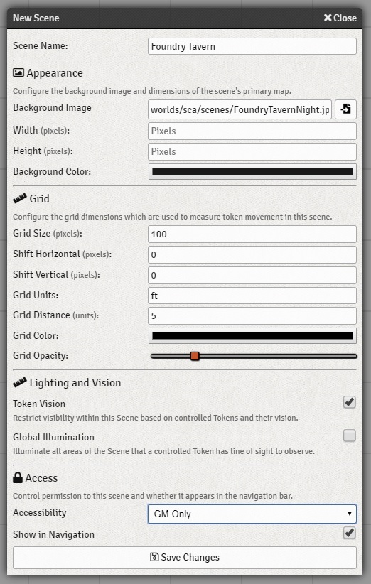

The Scene Entity¶
Scenes represent the areas of a World that the players may explore. Scenes may depict a variety of settings
ranging from world or regional maps all the way down to small buildings or dungeons. At each point in time, one
Scene is classified as the active scene. The same scene is active for all users. For each individual user a
different Scene may be treated as the viewed scene, which is the area currently rendered on the game canvas
for that user.
Working with Scenes
Scene Configuration¶
The Scene configuration menu allows you to customize the structure and appearance of each area within your world. This configuration is displayed automatically when a new Scene is created, but can always be accessed by left-clicking on the Scene in the sidebar directory, or by right clicking on the Scene in the top navigation bar and selecting “Configure”.
The fields which you can customize while configuring a Scene are detailed below:
- Scene Name
- The title of the scene that will appear in the Scenes directory in the sidebar and in the Scene navigation bar at the top of the screen.
- Background Image
- The file path or web address of the background image you wish to use for your scene. The icon to the right of the field will open a File Picker that helps you to locate images within your public directory.
- Width
- The rendered width of your scene, in pixels. If you do not fill this field out, the application will figure out the width automatically once the image is loaded.
- Height
- The rendered height of your scene, in pixels. If you do not fill this field out, the application will figure out the width automatically once the image is loaded.
- Grid Size
- The grid size, in pixels, that should be used to define grid squares within the Scene. The grid is drawn starting from the top-left corner of the map image. If your background image has a visible grid already baked into the image, and if that grid does not align perfectly with the top-left corner of the image, you may need to use the Shift Horizontal and Vertical settings below to offset the image.
- Shift Horizontal
- Shift the background image horizontally by a number of pixels to better line up pre-drawn grid lines. Positive numbers shift the image to the right, negative numbers to the left.
- Shift Vertical
- Shift the background image vertically by a number of pixels to better line up pre-drawn grid lines. Positive numbers shift the image down, negative numbers up.
- Grid Units
- The unit of measure that each square of space represents in this map. For battlemaps this may be on the order of feet or meters, for a large region map each individual grid space could represent miles or kilometers. You may put whatever string value you wish in this field, it is only used for tooltip displays when measuring.
- Grid Distance
- The number of grid units which each space represents. For example, in a battlemap if the Grid Units are feet then a single square might represent 5 units of distance.
- Grid Color
- Customize the color of the rendered grid.
- Grid Opacity
- Customize the transparency of the grid. Higher opacity results in a less transparent grid, and vice versa. If you set this slider all the way to zero (left) the grid will not be visible at all.
- Token Vision
- If this setting is enabled, visibility of the scene will require ownership of a Token which is placed in the scene and has a vision setting. If this setting is disabled, players will be able to see a scene even if they do not have a token present. This setting must be enabled to make use of Fog of War and Dynamic Lighting features.
- Global Illumination
- If this setting is enabled, the entire scene will be affected by Bright Light, allowing full visibility for any areas of the scene where an owned token has line-of-sight. This setting will have no effect if Token Vision is disabled.
- Accessibility
- Scenes may be kept as “GM Only” in which case players will not be able to access them unless the a Gamemaster user activates the scene. If accessibility is set to All Players, then players may choose to view the scene themselves if it is available in the navigation bar. You probably what to keep your secret dungeon level set to GM Only while alternatively it makes sense to set region map the party is exploring to be viewed by “All Players”.
- Show in Navigation
- If this setting is enabled, the scene will appear in the Navigation bar at the top of the screen. This navigation menu is best used for scenes you plan to actively use during the course of a game session for convenient access. You can also add or remove scenes from the navigation menu by right clicking on the Scene in the sidebar directory.
The Scene Entity API¶
For module developers interested in working with Scenes, API documentation for scenes and associated classes is available in the The Scene Entity page.